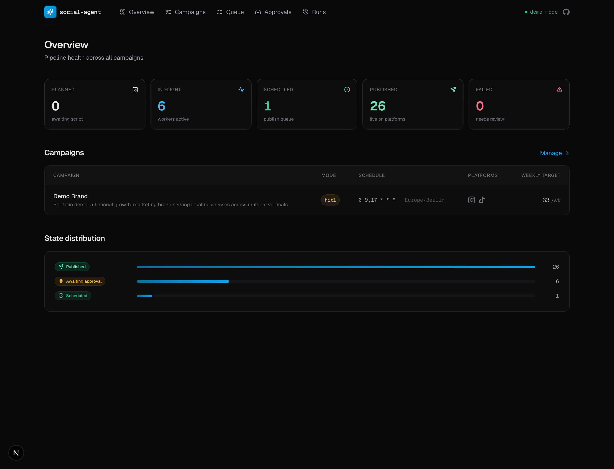
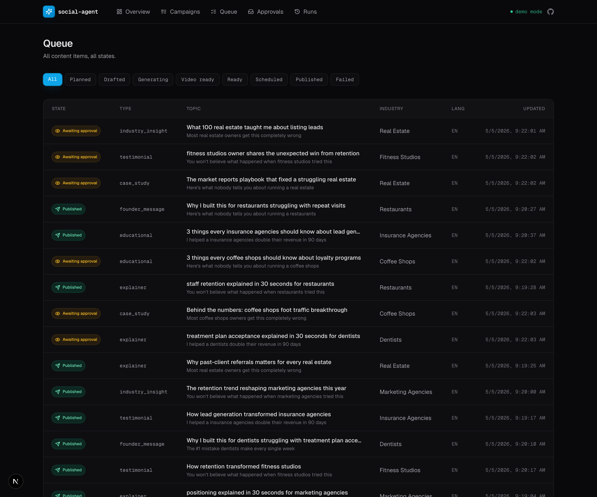
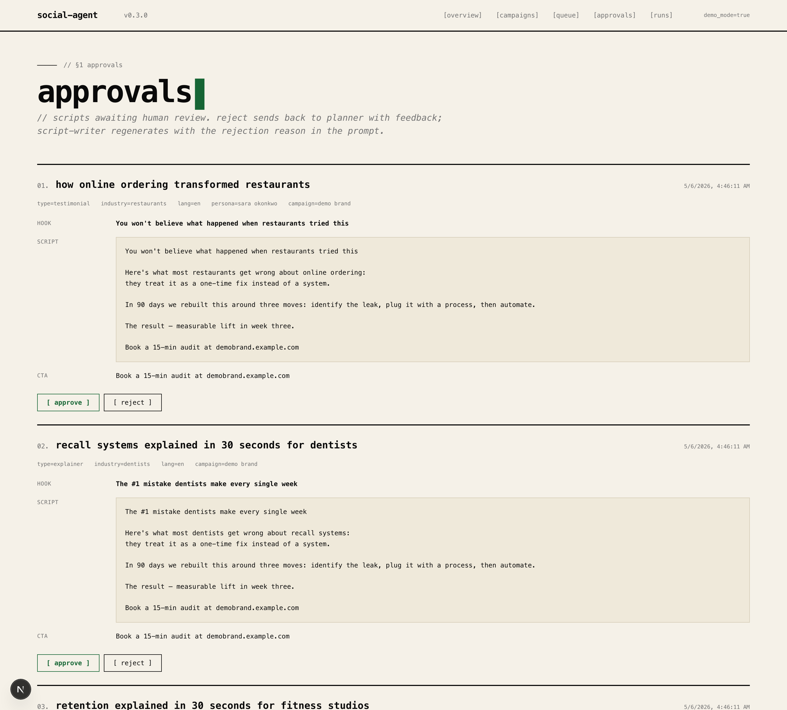
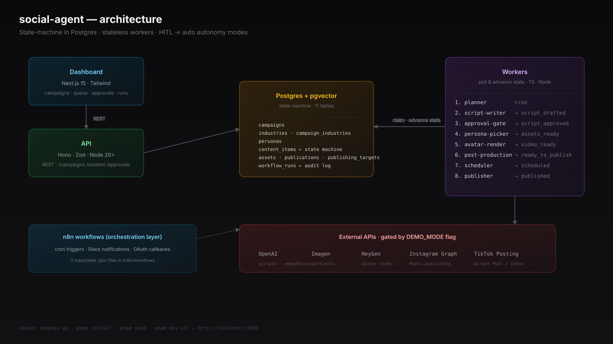

From campaign config to published Reels and TikToks — autonomously. State machine in Postgres, stateless TypeScript workers, n8n orchestration, live dashboard with HITL approval gates.
Every state transition. Every retry. Every approval. All live.



Every content_item walks a strict-forward state machine. Workers claim with FOR UPDATE SKIP LOCKED — horizontal scaling for free.
Boot in HITL approval mode. Flip per-campaign to auto when the brand voice stabilizes. Same code path, one config flag.
Topics embedded with text-embedding-3-small. Cosine distance against last 90 days. Regenerates if max similarity > 0.85.
Whisper subtitles. Burned captions. CTA overlays. TikTok-spec H.264/AAC normalization. All gated by DEMO_MODE.
Instagram Graph API + TikTok Content Posting API. No third-party publisher tax. Token rotation service handles long-lived credentials.
Pulls IG Insights + TikTok performance back into the planner. High-performing topics get re-weighted for similar future content.

Workflow engines are great for orchestration, terrible at owning business state. Postgres knows what exists; n8n + workers just react.
Crash recovery is automatic. Adding a new step = one new worker. Scaling = run more processes. No orchestration changes.
No API keys needed in DEMO_MODE.
# 1. boot the database (postgres + pgvector via docker)
$ cp .env.example .env && pnpm dev:db
# 2. install + seed the demo campaign
$ pnpm install && pnpm seed
# 3. run the API + workers + dashboard
$ pnpm dev:all
→ http://localhost:3000
# bonus: flip to autonomous and watch items flow
$ pnpm demo